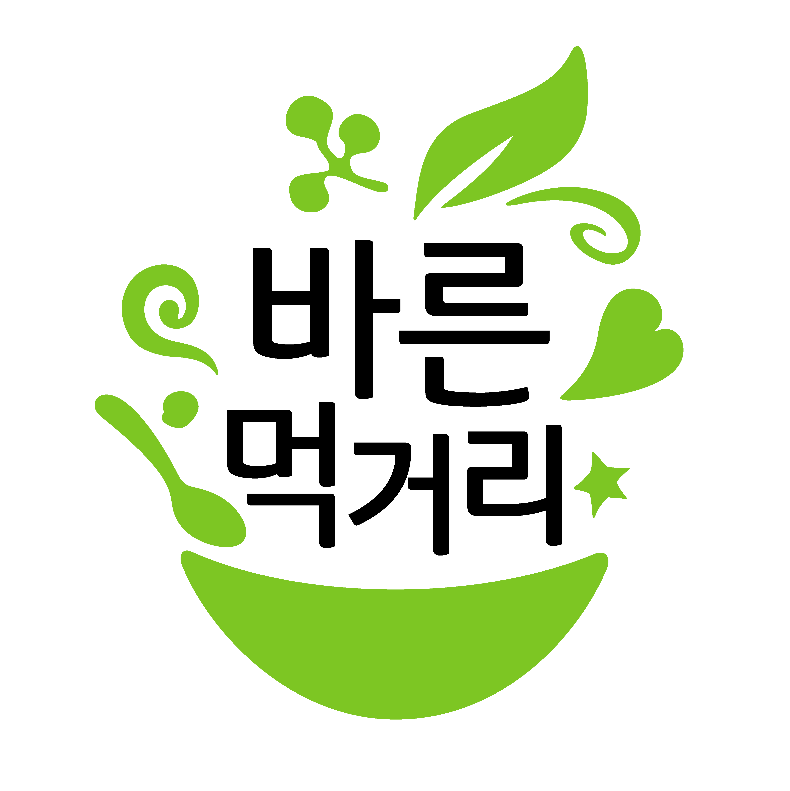
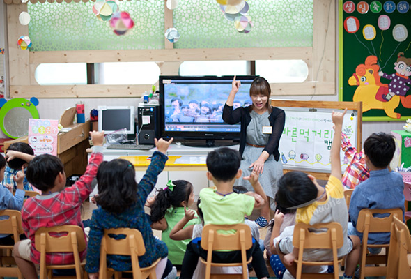
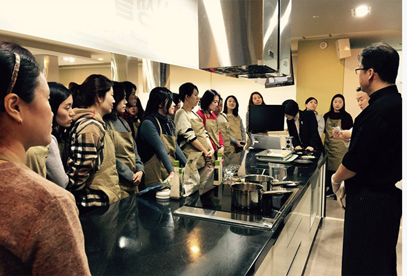
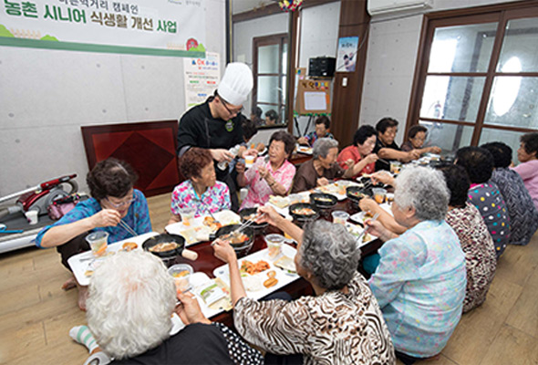

바른먹거리의 중요성을 알리고 바른 식습관을 교육합니다.

어렸을 때 입맛이 평생 건강이 됩니다.풀무원은 바른먹거리를 만드는 일 못지않게
바른 먹거리의 중요성을 널리 알리고
바른 식습관을 교육하는 일이 식품회사의 중요한 사회적 책임이라고 생각합니다.
바른먹거리 캠페인은 2010년 초등학생을 대상으로 한 식품표시 교육을 시작으로
미취학아동, 초등학생, 성인, 시니어 교육으로까지 확대되고 있습니다.
-
어린이 바른먹거리 교육
전문강사 ‘푸듀케이터(food+educator)’와 함께해요!
 교육대상:
교육대상:미취학어린이, 초등학생, 학부모-아이  교육내용:
교육내용:1. 자연의 맛과 친해지기!
‘미각 교육’
2. 골고루 잘 먹기!
‘영양균형 교육’
3. 스스로 하는 건강한 선택!
‘식품표시 확인교육’
4. 지구환경과 나를 소중하게!
'바른먹거리 동물복지 교육' -

성인 바른먹거리 교육교육도 받고 ‘로하스 플레이트(영양균형 식판)’도 지원해요!
교육대상:학부모, 저소득층 어린이 교육내용:1. (학부모)
당도 줄이고 몸도 줄이고!
‘지엘 다이어트(GL Diet)’
2. (저소득층 어린이)
식사를 균형있게!
‘지속가능 식생활 2:1:1’ -

시니어 바른먹거리 교육‘건강한 노년의 삶’에 대한 고민을 해결해요!
교육대상:충북 음성군 농촌마을 교육내용:1. 맞춤 건강식단과 건강 먹거리!
‘마을밥상’
2. 교육, 상담, 실천까지!
‘식생활 개선’
3. 음성군보건소 함께 건강관리!
‘농촌지역 시니어를 위한 통합건강증진 사업’